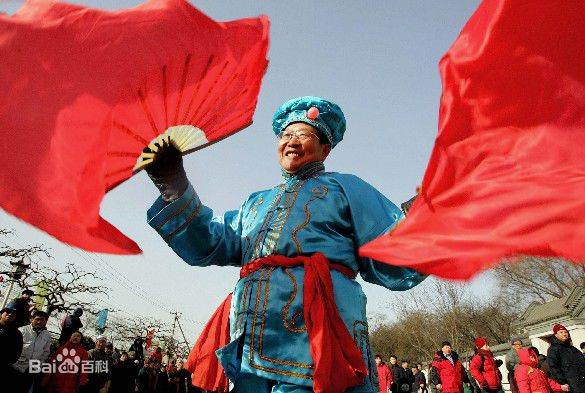
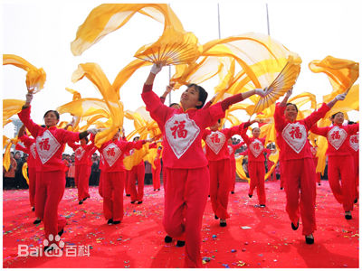
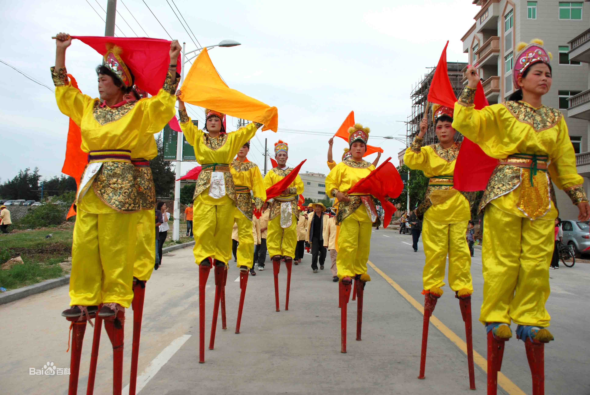

东北是一个多民族聚居的地区，这里世代生活着满、蒙、赫哲、鄂温克、鄂伦春、达斡尔、锡伯、等原主民族，直到清兵入关以后，才逐渐有大量的汉人涌入。随着东北各民族三百多年的互相融合，逐渐形成了今天的东北方言 。东北方言虽然属于北方方言的一种，但由于其语言底层还保存着很多反映当地少数民族民族风俗文化的词语，从而使东北方言呈现出别具一格的特色。
东北大秧歌
东北大秧歌是一项古老的汉族传统娱乐活动，来源于生产劳动之中。东北地区的汉族舞蹈有秧歌、龙灯、旱船、扑蝴蝶、二人摔跤、打花棍、高跷等形式，多在一起配合演出，统称为“秧歌”。

一．基本介绍
东北，年正月，无论城镇还是村屯，都有秧歌队欢快活泼的唢呐声、锣鼓声。正月初一家家户户都忙着拜年，一般从初二开始“跑秧歌”。演出形式以拜年贺喜为主。东北大秧歌是在清朝康熙年间，由流放到塞北的徒囚中艺人文士，将内地的戏曲歌舞带到东北，到了乾嘉时期，这种歌舞活动与东北人民的热情风格结合，形成了独具稳、梗、翘风格的秧歌舞，也渐渐形成秧歌音乐，由锣、鼓、镲、唢呐等奏出曲调。
二． 艺术特色编辑
东北秧歌形式诙谐，风格独特，将东北人民热情质朴、刚柔并济的性格特征表现出来。“稳中浪、浪中梗、梗中翘，踩在板上，扭在腰上”是东北秧歌的最大特点。同时，花样繁多的“手中花”，节奏明快富有弹性的鼓点，哏、俏、幽、稳、美的韵律，都是东北秧歌的特色。
三． 表演形式
1.地秧歌
也称地蹦子，包括"要龙”、 "旱船”、 "老汉推车”、 "斗狮子”等。有时还加一些喜剧人物形象来渲染气氛，如"傻柱子”和"大家老婆”等。

2.踩高跷
踩高跷它也分高、低两种：高的为"高跣”，低的叫"踩寸子”。
